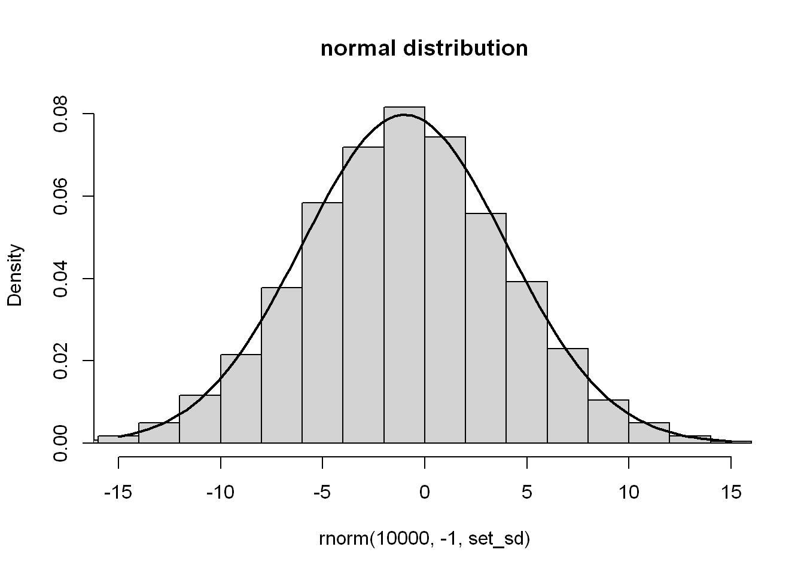
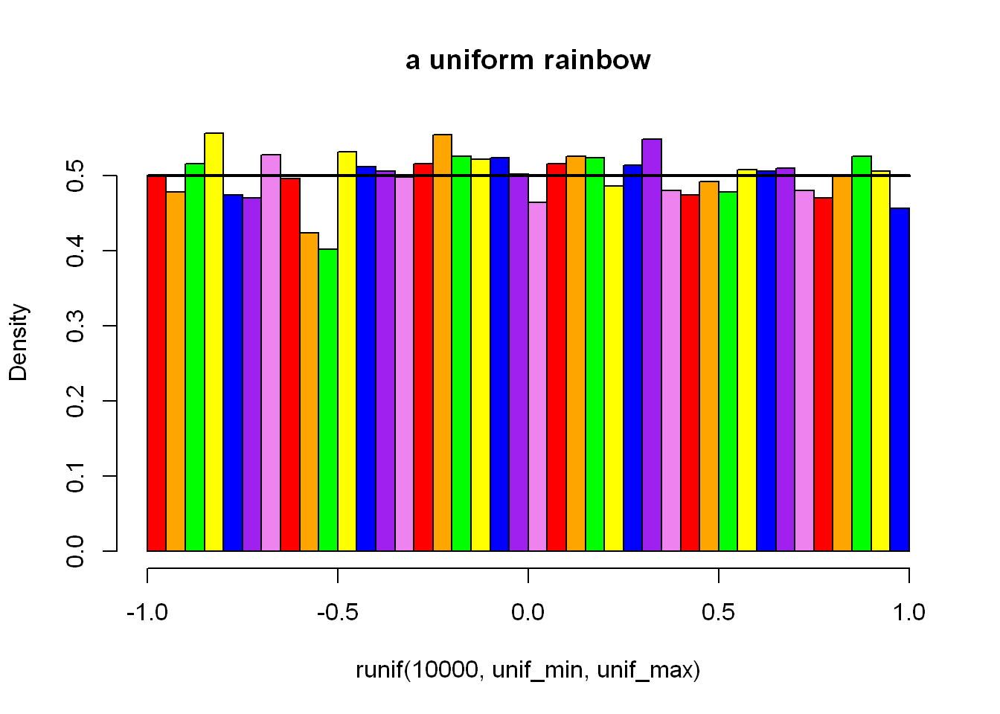
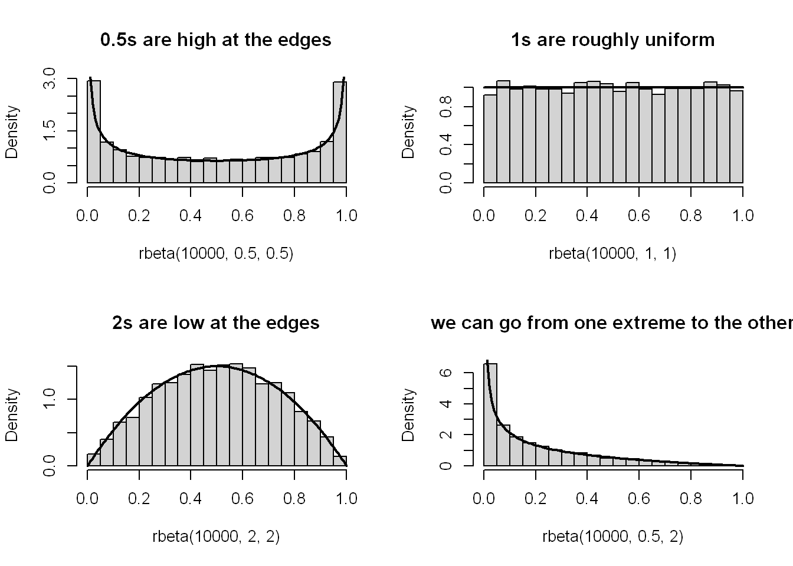

# Sequence up to length 5
seq(length.out = 5)[1] 1 2 3 4 5seq_len(5)[1] 1 2 3 4 5# Sequence positions of something of length 10
seq(along.with = 50:59) [1] 1 2 3 4 5 6 7 8 9 10seq_along(50:59) [1] 1 2 3 4 5 6 7 8 9 10seq()ences of numbers2.1.4. Generating arithmetic progressions with seq and :
Take a look at the manual page of seq_along and seq_len and determine whether we can do without them, having seq at hand.
So the two other functions cover cases that are handled by a single argument to seq().
# Sequence up to length 5
seq(length.out = 5)[1] 1 2 3 4 5seq_len(5)[1] 1 2 3 4 5# Sequence positions of something of length 10
seq(along.with = 50:59) [1] 1 2 3 4 5 6 7 8 9 10seq_along(50:59) [1] 1 2 3 4 5 6 7 8 9 10Same results, pretty straightforward; clearly we could do without them. On the odd occasion I want to do positional iteration over a vector, I do tend to use seq_along(), but I could live with the extra 7 characters.
count <- c(5, 6, 7, 8)
# I sometimes have a construction a little like this
for (index in seq_along(count)) {
print(count[[index]])
}[1] 5
[1] 6
[1] 7
[1] 8scan() in dataRead the help page about scan. Take note of the following formal arguments and their meaning: dec, sep, what, comment.char, and na.strings.
scan() reads data into a vector from file. It has 22 Arguments! Alright:
".". I imagine the most common alternative would be the comma ",", which is a standard in much of the world as well.sep = "," for reading in a Comma Separated Values file. The default to the argument is "" but the default behaviour is to split on whitespace.typeof() the data being read in."#" for an R file. It only takes a single-character though, so I’m not sure it could handle some other common structure, particularly for multi-lines.NA values by R.plot()Somewhat misleadingly (and for reasons that will become apparent later), the documentation of plot can be accessed by calling help(“plot.default”). Read about, and experiment with, different values of the main, xlab, ylab, type, col, pch, cex, lty, and lwd arguments. More plotting routines will be discussed in Chapter 13.
Let’s build up a plot with them to try it out.
main, xlab, ylab
A title for the plot, its x-axis and y-axis, respectively.
plot(
0:25,
main = "This is what my plot's all about",
xlab = "This axis goes along",
ylab = "This axis goes up"
)pch
See help("points"). Give a number to specify the symbol to be used for the points, e.g. a solid circle or filled diamond. Numbers 0:25 have some common graphical symbols and 32:127 have other ASCII characters. Check them out:
# Even specify points on the graph with a vector
plot(
0:25,
pch = 0:25
)
cex
Couldn’t quite make them out? Specify a number by which to scale points.
# Twice the size, please!
plot(
0:25,
pch = 0:25,
cex = 2
)type
The kind of things to be drawn, including points or lines, though curiously specified with a single-character only like "p" or "l".
# Let's try a line instead
plot(
0:25,
type = "l"
)col - Colour
The colours used for the lines and points of the plot.
# Add a hint of blue
plot(
0:25,
type = "l",
col = "blue"
)lty - line-type
Had to dig into help("par"). This is the line-type, you can change it from the default solid line.
# We can change the line type
plot(
0:25,
type = "l",
col = "blue",
lty = "dotted",
)lwd - line-width
Finally, although far from final out of all the graphical options, we can change the line width much like we can scale the symbol size.
# Triple the width!
plot(
0:25,
type = "l",
col = "blue",
lty = "dotted",
lwd = 3
)2.3.3. Natural exponential function and logarithm
Commonly, a logarithmic scale is used for variables that grow rapidly when expressed as functions of each other
I can see how it might be useful, though I’m curious to what actual examples might be (I have no statistics knowledge). I’ll just include the very nice example provided.
x <- seq(0, 10, length.out=1001)Noting that you can design a grid layout for graphics by setting the graphical parameters mfrow and mfcol with par().
par(mfrow=c(1, 2))
plot(x, exp(x), type="l", main = "linear-scale y-axis")
plot(x, exp(x), type="l", log="y", main = "log-scale y-axis") Let’s highlight that \(e^{x}\) on the log-scale is nothing more than a straight line
I understand it as natural log (i.e. log() with its default base = exp(1) is the opposite function to computing the exponential. It may be helpful to compare them side-by-side.
par(mfrow=c(1, 2))
plot(x, exp(x), type="l", main = "exponential")
plot(x, log(x), type="l", main = "natural log") Or more directly see that they cancel each other out:
exp(log(10))[1] 10hist()gram of probability distributions2.3.4. Probability distributions
A call to hist(x) draws a histogram, which can serve as an estimator of the underlying continuous probability density function of a given sample; see Figure 2.3 for an illustration.
Draw a histogram of some random samples of different sizes n from the following distributions:
rnorm(n, µ, σ) – normal \(N(μ, σ)\) with expected values \(μ ∈ {−1,0,5}\) (i.e., \(μ\) being equal to either \(−1, 0\), or \(5\); read “\(∈\)” as “belongs to the given set” or “in”) and standard deviations \(σ ∈ {0.5,1,5}\);
runif(n, a, b) – uniform \(U(a,b)\) on the interval \((a,b)\) with \(a=0\) and \(b=1\) as well as \(a=−1 and b=1\);
rbeta(n, α, β) – beta \(B(α,β)\) with \(α,β ∈ {0.5,1,2}\);
rexp(n, λ) – exponential \(E(λ)\) with rates \(λ ∈ {0.5,1,10}\);
Moreover, read about and play with the breaks, main, xlab, ylab, xlim, ylim, and col parameters; see help(“hist”).
set.seed(12345) Uh-oh, time to learn some maths (nice, actually). Here we go:
set_sd <- 5
hist(
rnorm(10000, -1, set_sd),
main = "normal distribution",
xlim = c(-3 * set_sd, 3 * set_sd),
probability = TRUE
)
x <- seq(-3 * set_sd, 3 * set_sd, length.out=101)
lines(x, dnorm(x,-1, set_sd), lwd=2) 
So, as I understand it here the mean, median and mode1 of the distribution should approximate to the second argument, \(-1\). Then just over \(2/3\) should be within \(5\) (the standard deviation) either side of that, and almost all should be with \(15\) (3 standard deviations). I used xlim to cut the axis to \(-15\) to \(15\), but you can see the edge of remaining bins creep in. Aha, like I said, I don’t know statistics.
I need to go on a tangent and finally find out what standard deviation is.
body(sd)sqrt(var(if (is.vector(x) || is.factor(x)) x else as.double(x),
na.rm = na.rm))The square root of the variance, hey? The body of var isn’t much help because it calls some C or C++ function. Looking it up, variance is a measure of how dispersed a data set is. Standard deviation is too, but perhaps sits at a more convenient range of values for doing other things with the value. Variance is the mean of the squares of the distance from the mean. Ah, I’m going to need to try that to figure it out.
var(1:100)[1] 841.6667my_var <- function(x) mean((x - mean(x))^2)
my_var(1:100)[1] 833.25I got close, but not quite right, hmmm. Another definition specifies taking the sum of the squares of the distance by mean and dividing by \(n - 1\) where n is the number of numbers. So let’s try that instead of the final mean (which would be the sum divided by n).
my_var2 <- function(x) sum((x - mean(x))^2) / (length(x) - 1)
my_var2(1:100)[1] 841.6667Aha! But there does seem to be two definitions, I’ll have to revisit that. Anyway, so then we just need to take the square root:
my_sd <- function(x) sqrt(my_var2(x))
my_sd(1:100)[1] 29.01149sd(1:100)[1] 29.01149Neat. Okay, it makes sense to me that distance from the mean would be used to present deviation, but I’m not quite what the rest is for. I can see that taking the square resolves negative deviation and the square root at the end somewhat rebalances it. If that were the only goal, then why wouldn’t the absolute differences be used? Something like:
absolute_deviation <- function(x) {
mean(abs(x - mean(x)))
}
absolute_deviation(1:100)[1] 25Maybe that could work? Well, apparently it is a thing - Average Absolute Deviation, but I suppose for now I just have to accept that standard deviation is just that, standard.
unif_min <- -1
unif_max <- 1
hist(
runif(10000, unif_min, unif_max),
col = c("red", "orange", "green", "yellow", "blue", "purple", "violet"),
breaks = 7 * 7,
main = "a uniform rainbow",
probability = TRUE
)
x <- seq(unif_min, unif_max, length.out = 10)
lines(x, dunif(x, unif_min, unif_max), lwd = 2)
He did say to play with col (colours) and breaks (number of bins). I note that n = 10000 seems enough to really see the expected distribution take shape, but it’s not so clear at e.g. n = 1000 and especially n = 100. Though even at 10000, as you get more breaks/bins like this, the variation becomes more visible again.
x <- seq(0, 1, length.out = 100)
par(mfrow = c(2, 2))
hist(rbeta(10000, 0.5, 0.5), main = "0.5s are high at the edges", probability = TRUE)
lines(x, dbeta(x, 0.5, 0.5), lwd = 2)
hist(rbeta(10000, 1, 1), main = "1s are roughly uniform", probability = TRUE)
lines(x, dbeta(x, 1, 1), lwd = 2)
hist(rbeta(10000, 2, 2), main = "2s are low at the edges", probability = TRUE)
lines(x, dbeta(x, 2, 2), lwd = 2)
hist(rbeta(10000, 0.5, 2), main = "we can go from one extreme to the other", probability = TRUE)
lines(x, dbeta(x, 0.5, 2), lwd = 2)
I’m not really sure what’s going on here. Roughly I understand that it produces a distribution between 0 and 1, where shape1 perhaps has more influence closer to 0 and shape2 closer to 1. The higher the number, the lower the density at its respective end of the distribution.
rate <- 10
hist(rexp(10000, rate), main = "exponential distribution", probability = TRUE)
x <- seq(0, 1, length.out = 100)
lines(x, dexp(x, rate), lwd = 2)As we saw from the plotting exp() earlier, the majority sit at a very low value, until it reaches the point of rapid growth, where a rapidly decreasing amount of numbers can be found at each range on the way up. Plotting the density seems to give a horizontally flipped shape. The rate (\(λ\)) controls how rapid it grows.
Marek gives a really nice example here of six-sided dice rolls to explain both binomial distribution and the different distribution function prefixes R uses; d*2, b*, q* and r*. So, binomial distribution gives us the probability distribution of successes in a sequence of tests/trials. As per the example, this could be a sequence of dice rolls with a particular face result counted as a success.
n = 12 # Number of trials
p = 1/6 # Probability of success of rolling a particular face in a single roll
# See how likely each number of success is, from the minimum 0 times to the max n times
round(dbinom(0:n, n, p), 2) [1] 0.11 0.27 0.30 0.20 0.09 0.03 0.01 0.00 0.00 0.00 0.00 0.00 0.00It shows 2 successes is just about the most likely (as we started from 0). Then we can check how likely it is to see a certain number of successes or fewer.
round(pbinom(0:n, n, p), 2) [1] 0.11 0.38 0.68 0.87 0.96 0.99 1.00 1.00 1.00 1.00 1.00 1.00 1.00It’s very unlikely to roll more than 4 of the same face, so we see 96% probability to roll 4 or less times. By 6 rolls, it’s indistinguishable from guaranteed (at 2 decimal places), which - yeah - does make sense for a 1/6 chance. Sort of the inverse view, we can also check the smallest number of (maximum?) successes for a certain likelihood. Here we use the q (quantile) function to check by decile:
qbinom(seq(0, 1, length.out = 11), n, p) [1] 0 0 1 1 2 2 2 3 3 4 12So to reach at least 70% or 80% likelihood of rolling our number of successes or lower, that number would have to be 3, as per the 0.87 figure from the probability distribution. I am half following what’s going on 😅. Back to more familiar territory of random number generation, we can see how many successes we get across multiple sets of n attempts:
rbinom(30, n, p) [1] 3 3 1 1 1 1 5 4 3 2 2 6 4 1 1 3 2 3 3 1 4 2 2 1 2 1 1 3 3 4The Pochhammer symbol, \((a)x =Γ(a+x)/Γ(a)\), can be computed via a call to
gsl::poch(a, x), i.e., the poch function from the gsl package:
Read the documentation of the corresponding gsl_sf_poch function in the GNU GSL manual. And when you are there, do not hesitate to go through the list of all functions, including those related to statistics, permutations, combinations, and so forth.
Let’s try it out
library(gsl)
poch(10, 3:6)[1] 1320 17160 240240 3603600I mean, at least the R code works. Oh boy, I’m so in over my head here. Ok, a bit of a simpler definition of the gamma function is \(Γ(x) = (x - 1)!\). At least I know what factorial does, so I’ll work with this one. I think it’s appropriate for any positive integer x3.
gamma(5)[1] 24factorial(5 - 1)[1] 24I’m not quite sure what we’re being pointed to the GSL manual for, at least for gsl_sf_poch it basically gives the same definition Marek did. Sure I can see there are loads of functions in the manual, but honestly it’s a bit much for me right now and I don’t know where to look. Similarly help(gsl::poch) just a whole bunch of functions. Special functions, for people who know what they are and what to do with them. Not me 🤷 (yet?).
diff() and cumsum()diff can be considered an inverse to cumsum. It computes the iterated difference: subtracts the first two elements, then the second from the third one, the third from the fourth, and so on. In other words,
diff(x)gives \(y\) such that \(y_i =x_{i+1} − x_i\).
triangular <- c(0, 1, 3, 6, 10, 15, 21, 28, 36, 45)
cumsum(triangular) [1] 0 1 4 10 20 35 56 84 120 165diff(triangular)[1] 1 2 3 4 5 6 7 8 9Indeed the difference goes up by one each time. Now, I want to try on a sequence based on iterated difference.
fibonacci <- c(1, 1, 2, 3, 5, 8, 13, 21, 34)
cumsum(fibonacci)[1] 1 2 4 7 12 20 33 54 88diff(fibonacci)[1] 0 1 1 2 3 5 8 13Aha, as one might expect, diff gives us much of the original sequence.
Let \(x\) be any vector of length \(n\) with positive elements. Compute its geometric and harmonic mean, which are given by, respectively,
\(\sqrt[n]{\Pi_{i=1}^{n}x_i = e^{\frac{1}{n} \sum_{i=1}^{n} logx_i}}\) and \(\frac{n}{\sum_{i=1}^{n} \frac{1}{x_i}}\)
I rewrote that out in TeX math, which has probably helped me follow a bit better. Harmonic mean looks simpler, so I’ll try that first. The length of a vector divided by the sum of one of each element of the vector, right?
harmonic_mean <- function(x) length(x) / sum(1/x)Is - is that it? Holy vectorisation! Not that this is a proper test, but let’s see, the harmonic mean of 1, 4, and 4 should be 2.
harmonic_mean(c(1, 4, 4))[1] 2Nice. Ok, geometric mean time. It looks like the exponential of (1 over the length of the vector, multiplied by the sum of the log of each element).
geometric_mean <- function(x) exp(1/length(x) * sum(log(x)))So I see that \(\sum_{i=1}^n\) really can just be quickly read as the sum() across the vector. The geometric mean of 2 and 8 should be 4:
geometric_mean(c(2, 8))[1] 4*Answer the following questions.
What is the meaning of the dot-dot-dot parameter in the definition of the c function?*
... arguments signify that any number4 of arguments can be passed, in this case they are the objects for c() to attempt to combine.
We say that the round function is vectorised. What does that mean?
When a numeric vector is passed to round() it will apply to every element of that vector. You don’t need for instance to loop through the vector, rounding each number individually. At least at the level of R code, as I assume round() is looping in a faster language under-the-hood.
What is wrong with a call to c(sqrt(1), sqrt(2), sqrt(3))?
As sqrt() is vectorised, it doesn’t need to be called again for each number, instead you could rewrite this as sqrt(c(1, 2, 3)). This would make a huge difference for bigger and bigger vectors.
What do we mean by saying that multiplication operates element by element?
When you multiply two vectors, the result will be a vector the length of the longest input vector. Each element of the result vector is the result of the individual operation of multiplying the respective elements of the input vector. Something like for vectors \(z = x * y\) their elements are as $z_i = x_i * y_i$
How does the recycling rule work when applying
+?
When summing two vectors, if one vector is shorter than the other, the shorter one will be repeated until it is the same length e.g. 1:10 + 1 is equivalent to 1:10 + rep(1, 10). It will happen even if the longer object length is not a multiple of shorter object length, but will throw a warning to let you know.
How to (and why) set the seed of the pseudorandom number generator?
Use set.seed() as I did earlier. This is done to make sure the results are reproducible, by yourself and others, later.
What is the difference between
NA_real_andNaN?
NA_real_ denotes a missing or unknown number in a numeric vector. NaN signifies an impossible operation on numeric values has been attempted, like taking the principal square root of a negative number.
# Unknown
sqrt(NA_real_)[1] NA# Impossible
sqrt(-100)Warning in sqrt(-100): NaNs produced[1] NaNHow are default arguments specified in the manual of, e.g., the round function?
They are specified in the Usage section with the form function(named_argument = default_value). The usage round(x, digits = 0) shows that by default the result of rounding will have no decimal places.
Is a call to
rep(times=4, x=1:5)equivalent torep(4, 1:5)?
No, because based on positional argument matching, rep(4, 1:5) is instead equivalent to rep(x = 4, times = 1:5). This is not only different, but invalid because times must either be the same length as x, or have a length of 1.
List a few ways to generate a sequence like \((-1, -0.75, -0.5, ..., 0.75, 1)\).
By gaps of 0.25
seq(-1, 1, 0.25)[1] -1.00 -0.75 -0.50 -0.25 0.00 0.25 0.50 0.75 1.00By the same length of sequence
seq(-1, 1, length.out = (9))[1] -1.00 -0.75 -0.50 -0.25 0.00 0.25 0.50 0.75 1.00Along with a sequence of the same length
seq(-1, 1, along.with = 1:9)[1] -1.00 -0.75 -0.50 -0.25 0.00 0.25 0.50 0.75 1.00And noting the default already is to = 1
seq(-1, by = 0.25)[1] -1.00 -0.75 -0.50 -0.25 0.00 0.25 0.50 0.75 1.00Or do something worse like this?
diff = -1 - 1
step_size = 0.25
steps = abs(diff / step_size)
values = -1 + (seq_len(steps) * step_size)
c(-1, values)[1] -1.00 -0.75 -0.50 -0.25 0.00 0.25 0.50 0.75 1.00Is
-3:5the same as-(3:5)? What about the precedence of operators in expressions such as2^3/45^6,56+4/17%%8, and1+-2^3:4-1`?
-3:5[1] -3 -2 -1 0 1 2 3 4 5-(3:5)[1] -3 -4 -5Are different because in the first one the start of the sequence is set to negative 3 whereas in the second one the whole sequence is set to negative.
In 2^3/4*5^6 taking the power of (^) comes first, then the the division and multipilcation is read in order. It can be understood as ((2^3)/4)*(5^6) as the division comes before the multiplication i.e. it’s not equivalent to (2^3)/(4*(5^6)).
In 5*6+4/17%%8 it’s read in the order %%, *, /, + i.e. as ((5*6)+4)/(17%%8).
In 1+-2^3:4-1 it’s read ^, unary -2, :, binary +, binary - i.e. as 1 + (-(2^3)):4 - 1, noting the binary + and - are outside the reach of the binary :.
If \(x\) is a numeric vector of length \(n\) (for some \(n≥0\)), how many values will
sample(x)output?
Sample will return \(n\) values. If no size argument is passed to sample() it will pass length(x) as the size argument to sample.int().
Does scan support reading directly from compressed archives, e.g., .csv.gz files?
Yes, in help(scan), the file argument explicitly states that this can be a compressed file. I assume this example would be covered by gzfile()
When in doubt, refer back to the material discussed in this chapter or the R manual.
legend() to your plot()Thanks to vectorisation, implementing an example graph of arcsine and arccosine is straightforward.
Thusly inspired, plot the following functions: \(|sinx^2|\), \(|sin|x||\), \(\sqrt{⌊x⌋}\) and \(1() 1 + e^{-x})\) Recall that the documentation of plot can be accessed by calling help(“plot.default”).
x <- seq(-1, 1, length.out=101)
funs <- list(
function(x) abs(sin(x^2)),
function(x) abs(sin(abs(x))),
function(x) sqrt(floor(x)),
function(x) 1/(1+exp(-x))
)
plot(x, funs[[1]](x),
type = "l", lwd = 2,
ylab = "four functions of x?")
lines(x, funs[[2]](x), col = "red", lwd = 2, lty = 2)
# Oops I'm calling sqrt() on negative numbers
lines(x, funs[[3]](x), col = "blue", lwd = 2, lty = 3)Warning in sqrt(floor(x)): NaNs producedlines(x, funs[[4]](x), col="purple", lwd = 2, lty = 4)
legend(
"bottomleft",
vapply(funs, \(x) deparse(body(x)), character(1)),
lty = 1:4,
col = c("black", "red", "blue", "purple")
)I don’t know if I did it. I certainly tried. Were they supposed to be separate? Did I interpret the notation correctly?
The expression: \[ 4\sum_{i=1}^{n} \frac{(-1)^{i+1}}{2i- 1} = 4(\frac{1}{1}-\frac{1}{3}+\frac{1}{5}-\frac{1}{7}+...) \] slowly converges to \(π\) as \(n\) approaches \(∞\). Calculate it for \(n = 1,000,000\) and \(n = 1,000,000,000\), using the vectorised functions and operators discussed in this chapter, making use of the recycling rule as much as possible.
almost_pi <- function(n) {
x <- 1:n
4 * sum(((-1)^(x + 1) / ((2 * x) - 1))
)
}
almost_pi(1e6)[1] 3.141592almost_pi(1e9)[1] 3.141593Starting to get a feel for this vectorisation thing. I think I’m in the right track when I’m working with \(x\) and not with \(i\) e.g. not for (i in 1:n) {...}. However, for \(n = 1,000,000,000\) it still did take quite some time.
- Let x and y be two vectors of identical lengths \(n\), say: *
x <- rnorm(100)
y <- 2*x+10+rnorm(100, 0, 0.5)Compute the Pearson linear correlation coefficient given by:
\[ r = \frac{\sum_{i=1}^n(x_i - \frac{1}{n} \sum_{j=1}^{n}x_j)(y_i - \frac{1}{n}\sum_{j=1}^n y_j)} {\sqrt{\sum_{i=1}^n(x_i - \frac{1}{n} \sum_{j=1}^n x_j)^2} \sqrt{(y_i - \frac{1}{n}\sum_{j=1}^n y_j)^2}} \]
Ok, calm down. Think in vectors. Think in vectors. Break it up. The four bracketed groups look to have the same structure, one in each half of the fraction for x, one for y. Set that out, then just apply sum(), sqrt() and ^2 as necessary. Fairly simple, after all.
pearson_coeff <- function(x, y) {
n = length(x)
stopifnot(n == length(y))
x_group <- x - (1/n) * sum(x)
y_group <- y - (1/n) * sum(y)
sum(x_group * y_group) / (sqrt(sum(x_group^2)) * sqrt(sum(y_group^2)))
}
pearson_coeff(x, y)[1] 0.9657844To make sure you have come up with a correct implementation, compare your result to a call to ‘cor(x, y)’.
cor(x, y)[1] 0.9657844Success!
I found that while R does provide mean() and median(), the function mode() is more akin to typeof() in providing the data type/mode. There is not a standard in-built function for the statistical mode.↩︎
Amusing to discover df() is a distribution function in R, after seeing so many dataframes borrowing that object name.↩︎
Ooh, ooh, let me try set notation: \(x ∈ N\)?↩︎
Well I’m sure there IS an upper limit, but “any” should be acceptable here.↩︎